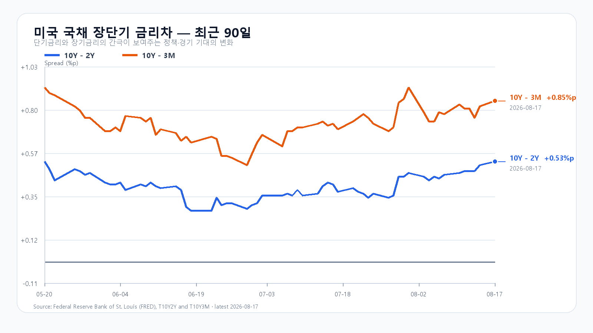
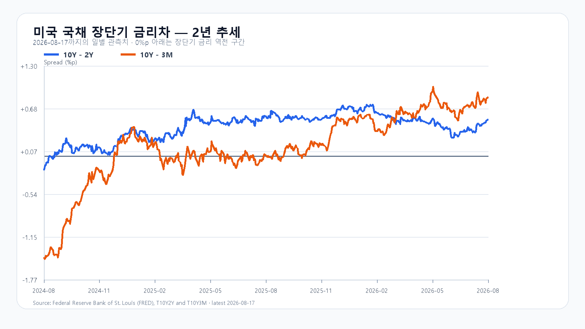

오늘의 한 문장
미국 지수는 내렸지만 메모리주는 올랐습니다. 삼성전자와 SK하이닉스도 장전 강세입니다. KOSPI가 7,010.86을 넘을 가능성은 커졌지만, 유가와 장기금리가 오른 만큼 외국인 현물 매수가 붙지 않으면 갭상승은 오래가기 어렵습니다.
7,000선을 넘는 힘은 장전 호가가 아니라 현물 수급이다
KOSPI는 8월 14일 7,010.86까지 오른 뒤 6,977.94로 마감했습니다. 외국인은 현물을 3조387억원 순매수했고, 기관과 개인은 각각 1조298억원과 1조9,820억원 순매도했습니다. 한 주 상승률은 11.49%였습니다.
휴장일인 월요일 EWY가 2.98% 오른 것은 새 신호입니다. 하지만 국내 시장의 지난주 급등을 고려하면 이 상승률을 오늘 지수에 그대로 더할 수는 없습니다. 장전 NXT에서 삼성전자는 281,000원(+2.37%), SK하이닉스는 1,711,000원(+4.01%)입니다. 정규장 시초가 뒤에도 이 가격을 지키고 외국인 매수가 이어져야 7,000선이 지지로 바뀝니다.
| 항목 | 확인값 | 오늘 기준 |
|---|---|---|
| KOSPI | 6,977.94 · +2.42% | 6,848 방어 · 7,011 돌파 |
| KODEX 레버리지 | 113,525원 | 109,740원 방어 · 115,020원 돌파 |
| 외국인 현물 | +30,387억원 | 장 초반 매수 속도 유지 |
| 삼성전자·SK하이닉스 NXT | 281,000원(+2.37%) · 1,711,000원(+4.01%) | 정규장 시초가 뒤 상승분 유지 |
지수는 약했고 메모리만 강했다
S&P500은 0.52%, Nasdaq은 0.32% 내렸습니다. QQQ는 0.16%, TQQQ는 0.51% 하락했습니다. 반면 SOXX는 1.58%, SMH는 1.06%, 필라델피아 반도체지수는 1.64% 올랐습니다. Micron이 4.13% 상승한 반면 Nvidia는 0.07%, Broadcom은 0.14%, AMD는 1.63% 내렸습니다.
NVIDIA는 OpenAI의 오하이오 데이터센터와 관련된 보증·자금조달 계약을 8-K로 공시했습니다. AI 인프라의 장기 수요는 커지고 있지만, 투자 규모가 커질수록 자금 부담도 늘어납니다. AMD는 47억5천만달러 규모의 선순위채 발행을 마쳤습니다. 같은 AI 투자 사이클 안에서도 메모리와 설계주, 자금조달 부담에 따라 주가가 갈렸습니다.
DDR4는 올랐고 DDR5는 숨을 골랐다
TrendForce의 8월 17일 공개치에서 DDR5 16Gb 4800/5600 현물 평균은 52.733달러로 보합이었습니다. DDR4 16Gb 3200은 88.939달러로 0.83%, DDR4 8Gb 3200은 42.895달러로 0.42% 올랐습니다.
메모리 실물 가격과 Micron 주가, 국내 NXT 호가가 같은 방향을 가리킵니다. 다만 KOSPI와 KODEX 레버리지가 지난주에 각각 11.49%, 25.18% 오른 뒤입니다. 오늘 상승 폭은 실물 가격보다 외국인이 높아진 가격을 받아 주는지에 달렸습니다.
유가 90달러와 10년물 4.72%가 상단을 누른다
미 재무부 8월 17일 확정치에서 3개월물은 3.87%, 2년물은 4.19%, 10년물은 4.72%였습니다. 10년-2년 금리차는 +0.53%포인트, 10년-3개월 금리차는 +0.85%포인트입니다.
브렌트유는 90.87달러로 올랐고 최신 WTI 선물은 85달러대입니다. 달러/원은 1,415.50원, Nasdaq100 선물은 -0.05%였습니다. 원화 강세는 외국인 수급에 우호적이지만 유가와 장기금리 상승은 반도체 밸류에이션의 상단을 제한합니다.


오늘 밤에는 물가와 생산을 함께 본다
| 시각 | 이벤트 | 확인할 것 |
|---|---|---|
| 8월 18일 21:30 | 미국 수출입물가·주택착공 | 유가의 물가 전가·주택 경기 |
| 8월 18일 22:15 | 미국 산업생산 | 제조업·설비 가동률 |
| 8월 18일 23:00 | 미국 잠정주택판매 | 금리 상승의 수요 영향 |
유가가 오른 상태라 수입물가가 강하면 금리와 달러가 다시 뛸 수 있습니다. 산업생산이 예상보다 강하면 반도체 수요에는 우호적이지만, 국채금리 반응까지 함께 봐야 합니다.
오늘의 시나리오와 확인 기준
메모리주가 강하게 출발한 뒤 7,000선을 오가며 급등분을 소화합니다.
7,010.86을 지지로 바꾸고 외국인 현물 매수가 이어지는 경우입니다.
유가·금리 부담 속에 메모리주가 갭상승분을 반납하는 경우입니다.
KODEX 레버리지는 109,740원 방어, 113,525원 유지, 115,020원 돌파를 차례로 봅니다. 115,020원을 넘고 KOSPI 7,010.86 위에서 외국인 매수가 이어지면 120,000원 구간이 열립니다.
오늘 판단은 공격 30점 · 관망 50점 · 방어 20점입니다.
자료 기준
한국 시세와 NXT는 Naver Finance, 미국 시장과 유가는 AP, 국채 금리는 미 재무부, 메모리 가격은 TrendForce 자료입니다. 기업 계약과 자금조달은 NVIDIA 8-K와 AMD 8-K, 일정은 뉴욕연은을 확인했습니다.